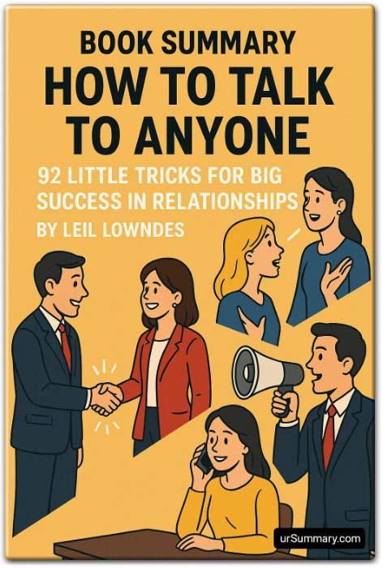

Library › Psychology & People
How to Talk to Anyone — Summary & Key Lessons

92 little tricks for big success in relationships — the tactical field manual for first impressions, small talk, and charisma.
📖 OPEN THE FULL INTERACTIVE BREAKDOWN →🌐 Read it in Hindi, Hinglish, Gujarati, Tamil & 22 more languages — free, with audio.
💡 The Big Idea
Where most communication books give philosophy, Lowndes gives TECHNIQUES — 92 named micro-tricks drawn from sales, politics, and psychology, organized by situation: first impressions (the Flooding Smile, Sticky Eyes, the Big-Baby Pivot), small talk (matching mood, Prosaic with Passion, wearing a Whatzit), sounding like a somebody (Comm-YOU-nication, the Exclusive Smile), being an insider in any crowd (Scramble Therapy, learning the jobbledygook), praise that works (the Killer Compliment, Little Strokes, the Knee-Jerk 'Wow'), and phone/party mastery. The premise: charisma isn't born — it's an accumulation of tiny, learnable behaviors, each worth a fraction of a point, compounding into 'presence' that others can feel but can't name.
🧠 The 6 Key Lessons
Lesson 1: The First Ten Seconds: Smile, Eyes, Posture
Part 1: You Only Have Ten Seconds to Show You're a Somebody
Before you speak, your body has already delivered a full presentation. Lowndes' opening toolkit: THE FLOODING SMILE — don't flash an instant grin at everyone (instant = automatic = meaningless); pause, look at the person's face for a beat, and THEN let a warm smile flood over you — the delay makes it feel personal and genuine. STICKY EYES — maintain eye contact that lingers even after they finish speaking, breaking away slowly and reluctantly (it signals interest and confidence; with intensity calibrated to context). EPOXY EYES for advanced play: watch your target even while others speak. THE BIG-BABY PIVOT: when meeting someone, turn FULLY toward them — body, feet, attention — the total-turn a mother gives a baby; it delivers 'you are the most important person in the room' without a word. And HANG BY YOUR TEETH: the posture trick — imagine dangling from a bar by your teeth; the image auto-corrects spine, shoulders, and chin into the bearing of a somebody.
📖 Example: Lowndes' research anchor: studies she cites put over 80% of first-impression formation in the visual channel — decided before the first sentence lands. Her field demonstration is the politician's entrance: watch a master work a room — every handshake gets… Read the full example →
⚡ Do this: Drill one trick per day this week: Monday the flooding smile (pause, then warm), Tuesday sticky eyes (slow reluctant breaks), Wednesday the full-body pivot on every introduction, Thursday teeth-hanging posture in doorways, Friday all four stacked. Ten seconds, engineered.
Lesson 2: Small Talk Is Music, Not Content
Part 2: What Do I Say After I Say Hello?
Small talk anxiety comes from hunting for brilliant CONTENT — but small talk is about MOOD-MATCHING and momentum: 'the words don't matter; the music does.' The techniques: match your listener's emotional tempo first (a beat of their energy before introducing yours — mismatched mood kills rapport before words register); PROSAIC WITH PASSION — banal answers delivered with energy beat clever answers delivered flat ('how's it going?' answered with genuine animation about anything ordinary works); ALWAYS WEAR A WHATZIT — carry or wear one unusual item (pin, bag, watch, book) that gives strangers an approach excuse; WHOOZAT — ask the host to introduce you with a fact-hook ('meet Sarah, she just got back from Iceland'); and NEVER THE NAKED CITY/JOB — when asked 'what do you do?' or 'where are you from?', never answer with the bare noun ('Mumbai'; 'accountant'): attach a conversation-feeding hook ('Mumbai — where the traffic taught me all my patience'). Every answer is either a dead end or a door; build doors.
📖 Example: Lowndes' party lab: the same question — 'where are you from?' — answered two ways: 'Ohio' (conversation dies; questioner scrambles) versus 'Ohio — the state that produced more astronauts than any other; I think it's because we all wanted to leave' (three… Read the full example →
⚡ Do this: Prepare your hooks tonight: write door-opening answers to the four inevitable questions (what do you do, where are you from, how do you know the host, how's it going) — each with one hook. Pick your whatzit and wear it to the next three events. And practice the two-beat mood match before every conversational entry this week.
Lesson 3: Comm-YOU-nication: Make Every Sentence About Them
Parts 3–4: Talk Like a Somebody / Be an Insider
The somebody-sounding stack: COMM-YOU-NICATION — start sentences with 'you' and frame content through the listener's interest ('You'll love this' beats 'I want to tell you'; 'You can get the discount by...' beats 'Our policy allows...') — the pronoun shift alone measurably warms reception; THE EXCLUSIVE SMILE — if you smile identically at everyone, your smile is worth nothing; calibrate so each person feels theirs is special; avoid CLICHÉS like the plague (they mark you as a nobody — coin your own phrases); use their NAME but not like a salesman (once or twice, at emotional moments); and KILL THE QUICK 'ME TOO' — when you share something in common, delay revealing it; let them talk, then unveil late ('the longer you wait, the more significant it seems'). For insider status anywhere: SCRAMBLE THERAPY — once a month, do something completely outside your world (a fencing class, a car show, a poetry night); each scramble installs the vocabulary and one real question for a whole tribe — enough 'jobbledygook' to open any conversation in that world for life.
📖 Example: Lowndes' pronoun experiment: two versions of identical requests — the 'I need the report by Friday' framing versus 'You'll be off the hook completely once the report's in Friday' — with compliance and warmth tracking the YOU-framing reliably. Her scramble… Read the full example →
⚡ Do this: Rewrite your next five requests/messages YOU-first. Schedule this month's scramble (one alien hobby event, two hours) and collect: three insider terms, one intelligent question, one story. And practice the delayed 'me too' once this week — let them discover the commonality at minute ten, not second ten.
Lesson 4: Praise, Parties & Phones: The Advanced Rooms
Parts 5–8: The Power of Praise / Party Sense / Phone Finesse
PRAISE mechanics: the KILLER COMPLIMENT — a specific, private, slightly personal observation delivered once ('you have the most elegant way of defusing tension') lands harder than a hundred 'greats'; LITTLE STROKES — small verbal applause sprinkled through conversation ('nice job on that,' 'well said'); the KNEE-JERK 'WOW' — praise delivered within seconds of witnessing the accomplishment; and TOMBSTONE GAME — learn what someone wants remembered about themselves ('what would you want on your tombstone?') and feed THAT specific hunger thereafter. PARTY tactics: work the room like a politician — arrive with the MUNCHING-OR-MINGLING rule (never both: food in hand kills approachability), sweep the room on entry (choose targets, don't drift), and be a STANDING OVATION for whoever you're with. PHONE rules: your voice must compensate for the missing 80% (smile audibly — 'they can hear it'; say the caller's name more than in person); the ten-second oral caller-ID check ('is this a good time?') that separates pros from pests. The meta-lesson across all 92: every micro-context has a technique, and mastery is remembering that the other person's feeling — not your performance — is the scoreboard.
📖 Example: The killer compliment's field rules come with Lowndes' warning story: delivered publicly, the same words embarrass; delivered to a stranger too early, they unsettle; delivered privately, once, at parting — they're remembered for years (her testimony:… Read the full example →
⚡ Do this: Deploy one killer compliment this week (specific, private, at parting). Play the tombstone game with someone important — then feed that exact hunger monthly. At your next event: no plate while mingling, room-sweep on entry, and be one person's standing ovation. On calls: smile before answering; run the ten-second time-check.
Lesson 5: The Art of the Opener: Names, Current Events and Icebreakers That Work
Part 2: Breaking the Ice
Lowndes' research on first impressions: the first four minutes decide whether a conversation ever becomes real, and the first four words can decide the tone. Her techniques include the 'flooding smile' (pause, then smile — it lands as genuine), the 'sticky eyes' (hold eye contact a beat longer than comfortable), and remembering that people's favourite topic is themselves. Small talk fails when it stays abstract; it works when you give the other person an easy hook — a genuine compliment, a curious question, a shared observation. The goal of the opener is not brilliance, it is simply to make the other person feel safe and interesting.
📖 Example: Lowndes tells of an executive who transformed his networking results by mastering one technique: saying the other person's name slowly and warmly at the start of a conversation. People he met once remembered him for years — because hearing your own name is… Read the full example →
⚡ Do this: In your next three conversations, use the 'flooding smile': look at the person, pause a beat, THEN smile — and use their name once, naturally.
Lesson 6: The Compliment That Lands: Praise the Unseen, Not the Obvious
Part 3: The Advanced Moves
Everyone compliments the obvious — the tie, the haircut, the big win. Lowndes' edge: compliment what people worked hard on but rarely get noticed for — their persistence, their judgment, their subtle kindness. The 'unseen compliment' lands because it proves you actually paid attention; it tells the person they were seen, not just looked at. Similarly, the 'big-baby pivot' — when someone is upset, mirror their emotion briefly before moving on — makes people feel understood. These micro-skills compound: the person who notices what others miss becomes unforgettable in every relationship.
📖 Example: Lowndes describes how a manager who praised employees for their 'calm under pressure' (instead of just results) built extraordinary loyalty — people worked harder for someone who saw their hidden effort than for someone who only counted the visible outcome. Read the full example →
⚡ Do this: Today, give one person a compliment about something they did that almost nobody would notice — and watch their face change.
✅ 5-Step Action Plan
- Drill the first-ten-seconds stack: flood, stick, pivot, posture.
- Build hook answers for the four inevitable questions; wear a whatzit.
- Go YOU-first in requests; do one monthly scramble for tribe keys.
- One killer compliment weekly; learn one tombstone and feed it.
- Party protocol: sweep, no plate, standing ovation; smile before answering calls.
⚠️ When This Doesn't Work
Lowndes' charm techniques — mirror, flatter, remember names — are powerful and exactly how Charlie Javice charmed JPMorgan into a $175 million acquisition of a company whose '4 million customers' were fabricated. People skills are the most dangerous toolkit in business because they work on everyone, including the people using them on you. The charm that opens doors must be backed by something that survives inspection — a real product, real numbers, real character. Otherwise you've just learned to be a better liar.
💀 The Graveyard Proves It
🎓 Frank (Charlie Javice) — Sold JPMorgan 4 Million Fake Students. Burn: $175M acquisition, 90% fake users. Read the full case study →
💬 Best Quotes from How to Talk to Anyone
- “The way you look and the way you move is more than 80 percent of someone's first impression of you.”
- “People don't care how much you know until they know how much you care — about them.”
- “The success of a party, a friendship, or a business deal often hinges on the first few moments.”
Interactive version: mark lessons as read, listen in your language, share quote cards.